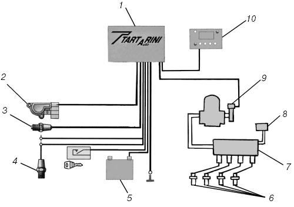
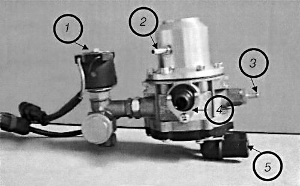
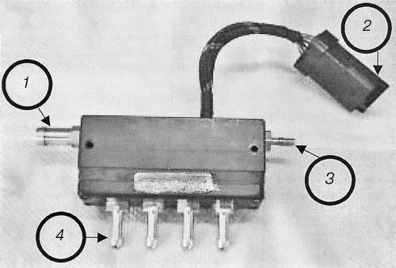

Система «Tartarini» (Италия).
Фирма «РАВУЛЬТРАГАЗ» предлагает систему подачи газа для любого автомобиля с впрысковым двигателем, т. е. систему распределенного впрыска, газа сжиженного нефтяного или природного газа (метан). Эта система прошла сертификацию в соответствии с нормами безопасности для автомобилей с бензиновыми двигателями рабочим объемом от 1,3 до 6 л.
Система управляется электронным блоком (ЭБУ), который контролирует время впрыска газа, подаваемого с помощью рампы с форсунками непосредственно во впускные каналы. Таким образом, достигается особенно точная дозировка топлива, что необходимо для оптимизации процесса сгорания. Время впрыска газа рассчитывается на основе времени впрыска бензина, задаваемого бензиновым ЭБУ.
Преимущества системы «Tartarini» заключается: в возможности ее установки на автомобили, отвечающие новым стандартам ЕОВД (Европейская Бортовая Диагностика); в оптимизации расхода топлива; в оптимизации характеристик двигателя и динамики автомобиля; в простоте установки; в предрасположенности к адаптации, когда для ЭБУ газовой системы используют сигналы, сформированные ЭБУ для бензинового топлива.
Принципиальная схема газового оборудования показана на рис. 41.

Рис. 41. Принципиальная схема газового оборудования «Tartarini»: 1 – электронный блок управления; 2 – датчик положения дроссельной заслонки; 3 – датчик частоты вращения коленчатого вала; 4 – лямбда-зонд; 5 – аккумуляторная батарея; 6 – штуцера во впускной трубопровод; 7 – рампа с форсунками газа; 8 – датчик разряжения во впускном трубопроводе; 9 – редуктор-испаритель повышенного давления с газовым клапаном отсечки; 10 – переключатель вида топлива с индексацией уровня газа в баллоне.

Рис. 42. Редуктор повышенного давления: 1 – электромагнитный клапан отсечки газа с фильтром; 2 – штуцер подсоединения вакуумного шланга; 3 – предохранительный клапан; 4 – патрубок выхода газа; 5 – патрубки входа и выхода теплоносителя.
Редуктор-испаритель двухступенчатый повышенного давления, работающий на ГСН, показан на рис. 42. Редуктор вакуумного типа с разгрузочным устройством. В его конструкции применен электромагнитный клапан отсечки газа, который запирает канал поступления газа. Благодаря этому обеспечивается предварительная подача газа до пуска двигателя, что позволяет использовать редуктор на автомобилях с инжекторными двигателями. Редуктор предназначен для перехода газа из жидкого состояния в газообразное и подачи его под постоянным давлением 0,05–0,1 МПа в магистраль форсунок.
Рампа газовых форсунок (рис. 43) – устройство, управляемое ЭБУ газовой системы, предназначенное для подачи необходимого количества топлива в каждый цилиндр двигателя в отдельности. Устанавливать рампу рекомендуется возможно ближе к штуцерам впрыска газа.

Рис. 43. Рампа газовых форсунок: 1 – вход газа; 2 – электрический разъем; 3 – штуцер подключения измерителя давления; 4 – калиброванные штуцеры для подачи газа во впускной трубопровод.
Калиброванные штуцеры для ГСН используются двух размеров: в автомобилях с объемом двигателя от 1 до 1,3 л – диаметром 1,8 мм; в автомобилях с объемом двигателя от 1,3 до 6 л – диаметром 4 мм.
Блок ЭБУ, имея относительно небольшие размеры, работает как полноценный бортовой процессор. В его задачу входит не только имитация сигналов для штатного «бензинового» ЭБУ, но и прием поступающих сигналов, их обработка и передача команд на все исполнительные узлы, находящиеся в подкапотном отсеке автомобиля. Он обрабатывает сигналы от лямбда-зонда, датчика положения дроссельной заслонки, датчика частоты вращения коленчатого вала, модуля зажигания.
Газовый процессор повторяет всю работу штатного процессора автомобиля.
Наличие газовых форсунок позволяет полностью исключить эффект обратного хлопка, который характерен для традиционных установок более раннего производства с подготовкой газовоздушной смеси в смесителе.